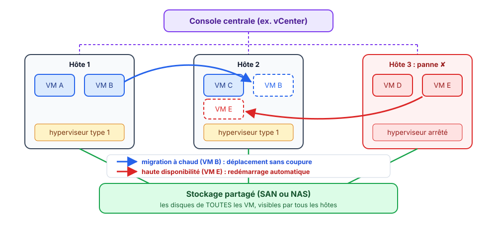

Virtualiser des serveurs¶
Résumé
La virtualisation de serveurs ne se limite pas à « faire tourner des VM ». Dans une entreprise, elle apporte des fonctions impossibles avec des serveurs physiques : déployer un serveur en quelques minutes à partir d'un modèle, déplacer une VM allumée d'un hôte à l'autre, redémarrer automatiquement les VM d'un hôte tombé en panne, répartir la charge.
Le cours présente ces fonctions et le vocabulaire des grandes plateformes (vCenter, vMotion, HA, DRS, P2V). Le TP met en pratique la plus utile au quotidien : on prépare un modèle de serveur Debian, avec un script qui donne une identité propre à chaque copie, puis on déploie trois serveurs web en quelques minutes, joignables depuis le navigateur du PC.
| Propriété | Valeur |
|---|---|
| Difficulté | Débutant |
| Durée estimée | 1 h 45 |
| Version décrite | VMware Workstation Pro 26H1, Debian 13.7, nginx |
| Place dans le parcours | Partie 5 sur 17 du parcours Virtualisation — jour 2 |
| Dernière mise à jour | 2026-11-16 |
Convention de lecture
🖥️ PC hôte (Windows et Workstation) · 🐧 VM Debian (le nom de la VM est précisé) · 🌐 navigateur du PC · ✍️ exercice · 🛟 instantané. Les comptes et mots de passe sont rappelés sur la page d'accueil du parcours.
Prérequis : la VM debian-tp du jour 1, avec ses instantanés 01-installation-terminee et 02-outils-installes (pris VM éteinte).
1. Ce que la virtualisation change pour les serveurs¶
1.1 Rappel : la consolidation¶
Au jour 1, on a vu que la plupart des serveurs physiques sont sous-utilisés et que la virtualisation permet de les regrouper sur quelques hôtes (partie 1). Elle permet aussi d'appliquer une bonne pratique autrefois trop chère : un service par serveur. Avec des VM, séparer le contrôleur de domaine, le serveur de fichiers et la messagerie ne coûte plus trois machines : une panne ou une mise à jour de l'un ne touche plus les autres.
1.2 Les fonctions d'une plateforme de virtualisation de serveurs¶
En entreprise, les hôtes de type 1 (ESXi, Hyper-V, Proxmox VE…) sont regroupés en cluster et administrés depuis une console centrale : vCenter Server chez VMware, System Center Virtual Machine Manager ou Windows Admin Center chez Microsoft, l'interface web de Proxmox VE. Les disques des VM sont rangés sur un stockage partagé que tous les hôtes voient (la partie 7 y est consacrée).

Le stockage partagé permet à n'importe quel hôte de faire tourner n'importe quelle VM
| Fonction | Nom chez VMware | Ce qu'elle fait | Coupure pour les utilisateurs |
|---|---|---|---|
| Modèle (template) | Template | Une VM « maître » qui sert à créer de nouveaux serveurs déjà installés et configurés | — |
| Migration à chaud | vMotion | Déplace une VM allumée d'un hôte à un autre : la mémoire est copiée pendant que la VM tourne, puis la bascule finale dure une fraction de seconde | Aucune perceptible |
| Migration du stockage à chaud | Storage vMotion | Déplace les disques d'une VM allumée d'un stockage à un autre | Aucune perceptible |
| Haute disponibilité | vSphere HA | Si un hôte tombe en panne, ses VM redémarrent automatiquement sur les autres hôtes du cluster | Le temps de redémarrer les VM |
| Tolérance aux pannes | Fault Tolerance (FT) | Une copie « miroir » de la VM tourne en permanence sur un autre hôte et prend le relais instantanément | Aucune, mais coûteux en ressources |
| Répartition de charge | DRS | Déplace automatiquement les VM (par migration à chaud) pour équilibrer la charge entre les hôtes | Aucune |
| Conversion | P2V, V2V | Transforme un serveur physique en VM (Physical to Virtual), ou une VM d'un hyperviseur vers un autre (Virtual to Virtual) | Selon la méthode |
Haute disponibilité ou tolérance aux pannes ?
La haute disponibilité ne supprime pas la coupure : elle la raccourcit. Quand l'hôte tombe, la VM s'arrête brutalement, comme si l'on avait coupé le courant, puis elle redémarre sur un autre hôte. La tolérance aux pannes évite toute coupure, mais elle double la consommation de ressources de la VM protégée : on la réserve aux quelques services vraiment critiques.
Et dans Workstation ?
Workstation est un hyperviseur de type 2 pour un poste de travail : il n'a ni cluster, ni migration à chaud, ni haute disponibilité. On y trouve en revanche les modèles et les clones, qui sont la base du déploiement rapide. C'est l'objet du TP.
1.3 ✍️ Exercice : quelle fonction pour quelle situation ?¶
Pour chaque situation, indiquer la fonction la plus adaptée.
- Il faut changer une barrette de mémoire défectueuse sur l'hôte 2, en pleine journée, sans gêner les utilisateurs.
- L'alimentation de l'hôte 3 a lâché à 3 h du matin ; personne n'est d'astreinte.
- Le service des ventes réclame cinq nouveaux serveurs Linux identiques pour demain matin.
- Un vieux serveur physique sous Windows Server, dont personne ne sait réinstaller l'application, doit quitter la salle machine.
- La baie de stockage A arrive en fin de garantie ; ses VM doivent passer sur la baie B, sans arrêt.
- Tous les lundis matin, l'hôte 1 sature pendant que l'hôte 2 se tourne les pouces.
Corrigé
- Migration à chaud (vMotion) : on déplace les VM de l'hôte 2 vers les autres hôtes, on met l'hôte en mode maintenance, on change la barrette, puis on remet l'hôte en service.
- Haute disponibilité (vSphere HA) : les VM de l'hôte 3 redémarrent automatiquement sur les autres hôtes. Il y a une coupure, le temps que les VM redémarrent, mais personne n'a besoin d'intervenir la nuit.
- Un modèle (template) : chaque serveur est créé en quelques minutes à partir d'une VM déjà installée et à jour, au lieu de cinq installations complètes.
- Une conversion P2V (Physical to Virtual) : le serveur est copié tel quel dans une VM, application comprise.
- Migration du stockage à chaud (Storage vMotion).
- Répartition de charge (DRS) : le cluster déplace automatiquement des VM de l'hôte 1 vers l'hôte 2.
2. TP : préparer un modèle de serveur¶
Un bon modèle est une VM propre, à jour et généralisée : on ne garde dedans que ce qui doit être commun à tous les serveurs. Ici, le modèle modele-debian contiendra Debian 13 à jour, sudo, open-vm-tools et un script de personnalisation qui donne à chaque copie sa propre identité (on a fait ces opérations à la main au jour 1, en partie 4).
2.1 Créer la VM modèle¶
- 🖥️ Vérifier que
debian-tpest éteinte. Ouvrir VM > Manage > Clone, puis Next. - Clone Source : An existing snapshot, choisir
02-outils-installes, puis Next. - Clone Type : Create a full clone : le modèle doit être indépendant de
debian-tp. Puis Next. - Nom
modele-debian, emplacementC:\VM\modele-debian, puis Finish et Close. - 🖥️ Dans VM > Settings de
modele-debian, régler Processors sur 1 × 1 et Memory sur 1 Go : les serveurs déployés hériteront de ces valeurs.
2.2 Écrire le script de personnalisation¶
- 🖥️ Démarrer
modele-debianet se connecter entssr. -
🐧 modele-debian : mettre le système à jour :
-
🐧 modele-debian : créer le script avec l'éditeur
nano:Y copier le contenu suivant (dans la console de Workstation, le copier-coller ne fonctionne pas : le taper, ou se connecter en SSH depuis Windows comme expliqué en partie 3) :
/usr/local/sbin/personnaliser-clone.sh#!/bin/bash # personnaliser-clone.sh : donne une identité propre à un clone de debian-tp # Usage : sudo personnaliser-clone.sh <nouveau-nom> set -e NOM="$1" if [ -z "$NOM" ]; then echo "Usage : sudo $0 <nouveau-nom>"; exit 1; fi if [ "$(id -u)" -ne 0 ]; then echo "Erreur : lancer ce script avec sudo"; exit 1; fi ANCIEN=$(hostname) sed -i "s/\b$ANCIEN\b/$NOM/g" /etc/hosts # nom dans /etc/hosts hostnamectl set-hostname "$NOM" # nom de la machine rm -f /etc/machine-id /var/lib/dbus/machine-id # identifiant de machine (et sa copie) systemd-machine-id-setup rm -f /etc/ssh/ssh_host_* # clés SSH d'hôte dpkg-reconfigure openssh-server rm -f /var/lib/dhcpcd/duid /var/lib/dhcpcd/*.lease # identifiant DHCP echo "Identité changée : $ANCIEN -> $NOM. Redémarrer avec : sudo reboot"Enregistrer avec Ctrl+O puis Enter, quitter avec Ctrl+X.
-
🐧 modele-debian : rendre le script exécutable :
Comment fonctionne ce script ?
set -earrête le script à la première erreur, au lieu de continuer sur un système à moitié modifié.$1est le premier argument de la commande : le nouveau nom. Sans argument, ou sanssudo(id -uvaut alors autre chose que0), le script affiche son mode d'emploi et s'arrête.- Chaque ligne suivante reprend une étape faite à la main en partie 4 : nom dans
/etc/hosts(\bdésigne une limite de mot, pour ne remplacer que le nom exact), nom de la machine, identifiant de machine, clés SSH, identifiant DHCP. - Un script, c'est une procédure écrite une fois et relancée à volonté, sans erreur : c'est la base de l'automatisation, une compétence attendue d'un TSSR.
2.3 Figer le modèle¶
- 🐧 modele-debian : éteindre la VM :
sudo poweroff. - 🛟 🖥️ VM éteinte, prendre un instantané nommé
modele-v1(VM > Snapshot > Take Snapshot), description « Debian 13 à jour + script de personnalisation ». - 🖥️ Ouvrir VM > Settings, onglet Options, rubrique Advanced, cocher Enable Template mode (to be used for cloning), puis OK.
À quoi sert le mode modèle ?
En mode modèle, Workstation protège la VM : on ne peut plus supprimer ni la VM ni ses instantanés. C'est un garde-fou : supprimer modele-debian ou son instantané modele-v1 par erreur rendrait inutilisables tous les serveurs déployés à partir de lui en clones liés.
3. TP : déployer trois serveurs web¶
3.1 Créer les clones¶
Pour chacun des noms web1, web2 et web3 :
- 🖥️ Sélectionner
modele-debian, ouvrir VM > Manage > Clone, puis Next. - Clone Source : An existing snapshot,
modele-v1. - Clone Type : Create a linked clone.
- Nom
web1(puisweb2,web3), emplacementC:\VM\web1(puisweb2,web3), Finish, Close.
Chronométrer
Lancer un chronomètre au début du premier clone et l'arrêter quand la page web du troisième serveur s'affiche (section 3.3). Comparer avec le temps d'installation de Debian de la partie 3.
3.2 Personnaliser chaque serveur¶
Pour chaque serveur (web1, puis web2, puis web3), un à la fois : ne démarrer le suivant qu'une fois le précédent personnalisé et redémarré (avant le script, les clones se présentent au DHCP avec la même identité et peuvent recevoir la même adresse IP) :
- 🖥️ Démarrer la VM et se connecter en
tssr. -
🐧 web1 : donner son identité au serveur (remplacer
web1par le nom du serveur en cours), puis redémarrer : -
🐧 web1 : après le redémarrage, se reconnecter, installer le serveur web nginx et remplacer sa page d'accueil par une page qui affiche le nom du serveur :
-
🐧 web1 : noter l'adresse IP du serveur :
Pourquoi sudo tee et pas sudo echo … > fichier ?
Dans sudo echo "texte" > /var/www/html/index.html, c'est le shell de l'utilisateur qui fait la redirection >, sans les droits d'administrateur : on obtient « Permission non accordée ». La commande tee écrit dans le fichier ; lancée avec sudo, c'est elle qui a les droits.
3.3 Tester depuis le PC¶
🌐 Dans le navigateur du PC, ouvrir http://<adresse de web1>, puis celles de web2 et web3.
Vérifier son lab
- Chaque page affiche son propre nom : « Serveur web1 », « Serveur web2 », « Serveur web3 ».
- 🐧 Sur chaque serveur,
hostnamectlaffiche le bon nom, etcat /etc/machine-iddonne un identifiant différent sur les trois serveurs. - Les trois serveurs ont trois adresses IP différentes.
- 🖥️ Une fois les serveurs éteints, les dossiers
web1,web2etweb3ne pèsent que quelques dizaines à quelques centaines de Mo chacun (nginx, les journaux, les fichiers modifiés), contre plusieurs Go pourmodele-debian. Une VM allumée a en plus un fichier.vmemde la taille de sa mémoire. - Le déploiement des trois serveurs prend bien moins de temps que trois installations de Debian (environ 15 minutes chacune), configuration non comprise.
La page ne s'affiche pas
- 🐧
systemctl status nginx: le service doit être active (running). - 🐧
wget -qO- http://localhost: si la page s'affiche dans la VM mais pas sur le PC, vérifier l'adresse IP tapée dans le navigateur. - En SSH, le message « REMOTE HOST IDENTIFICATION HAS CHANGED » : l'adresse a déjà servi à une autre VM, dont les clés étaient différentes ; voir l'encadré de la partie 4 (
ssh-keygen -R). - Deux serveurs ont la même adresse IP : le script n'a pas été lancé sur l'un d'eux, ou la VM n'a pas été redémarrée après. Le relancer, puis
sudo reboot.
3.4 Éteindre ce qui ne sert plus¶
🐧 Éteindre web2 et web3 (sudo poweroff) : seul web1 resservira en partie 6. Les garder (ne pas les supprimer) pour le défi du jour.
4. Questions de révision¶
- Qu'est-ce qu'un modèle (template), et que doit-il contenir ? Que ne doit-il pas contenir ?
- Quelle est la différence entre la migration à chaud et la haute disponibilité ? Laquelle provoque une coupure ?
- Pourquoi la migration à chaud et la haute disponibilité reposent-elles en pratique sur un stockage partagé ?
- Que signifie P2V ? Dans quel cas l'utilise-t-on ?
- Que fait la ligne
set -eau début d'un script bash ? Pourquoi est-elle utile ici ? - Pourquoi coche-t-on Enable Template mode sur
modele-debian?
Corrigé
- Une VM « maître », installée, à jour et configurée, qui sert à créer rapidement de nouveaux serveurs. Elle contient ce qui est commun à tous (système, mises à jour, outils, scripts). Elle ne doit pas contenir ce qui est propre à chaque serveur : nom, identifiants, clés, adresse IP fixe, données.
- La migration à chaud déplace une VM allumée d'un hôte à un autre, sans coupure perceptible : on l'utilise pour une maintenance prévue. La haute disponibilité redémarre automatiquement les VM d'un hôte tombé en panne sur les autres hôtes : il y a une coupure, le temps du redémarrage.
- Parce que l'hôte qui reprend la VM doit pouvoir lire ses disques. Avec un stockage partagé, il n'y a pas de disque à copier : seule la mémoire (migration) ou rien du tout (haute disponibilité) doit passer d'un hôte à l'autre. Une migration à chaud sans stockage partagé existe (elle copie aussi les disques), mais elle est bien plus longue ; la haute disponibilité, elle, est impossible sans stockage partagé ou répliqué, puisque l'hôte en panne ne peut plus rien copier.
- Physical to Virtual : la conversion d'un serveur physique en VM. On l'utilise pour virtualiser un serveur existant sans le réinstaller, par exemple quand l'application est difficile ou impossible à réinstaller.
- Elle arrête le script dès qu'une commande échoue. Sans elle, le script continuerait sur un système à moitié modifié (par exemple, clés SSH supprimées mais jamais recréées), ce qui serait pire qu'un arrêt net.
- Pour que Workstation protège la VM modèle : impossible de supprimer la VM ou son instantané
modele-v1, sur lesquels reposent les clones liésweb1,web2etweb3.
Ressources¶
- Broadcom — Cloner une VM dans Workstation 26H1 — clones liés et complets (en anglais).
- Broadcom — Le mode modèle (Template mode) — protéger la VM parente des clones liés (en anglais).
- Debian — Guide de référence, la ligne de commande et les scripts — premiers pas avec le shell, en français.
- nginx — documentation — le serveur web utilisé dans le TP (en anglais).
- Partie précédente : Partager les ressources · Partie suivante : Virtualiser le réseau.